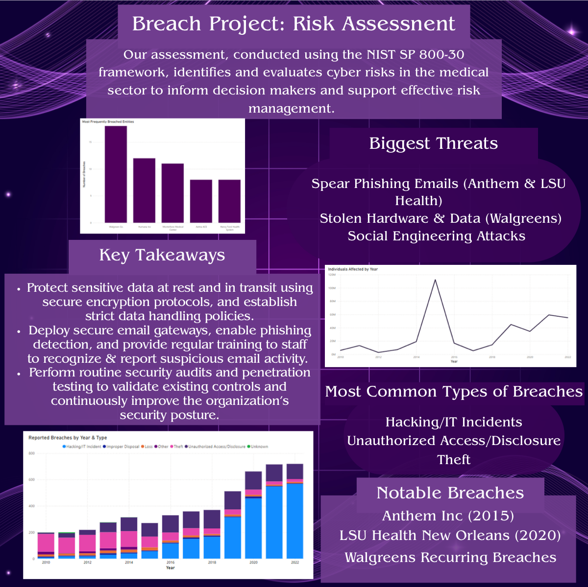

PDF Briefing Slide

Healthcare Sector Cyber Risk Assessment
Threat Vector Analysis, Historical Breach Data & Defense-in-Depth Strategy
This is a one-slider that sums up a series of projects completed for Professor Burns ISDS 4096: Cyber-risk Management Course. This comprehensive cybersecurity risk assessment analyzed threat surfaces and vulnerabilities across the medical sector under the NIST SP 800-30 framework. Evaluated historical healthcare breaches, modeled incident frequency trends, and created specific mitigations.
- Framework: NIST SP 800-30 methodology evaluating threat likelihood and medical impact
- Breach Investigation: Analyzed Anthem Inc. (~80M records affected), LSU Health New Orleans, and Walgreens
- Threat Locations: Identified Network Servers, Email Spear-Phishing, and Stolen Hardware
- Defense-in-Depth: MFA, IDS/IPS intrusion prevention, third-party vendor audits, and end-to-end data encryption